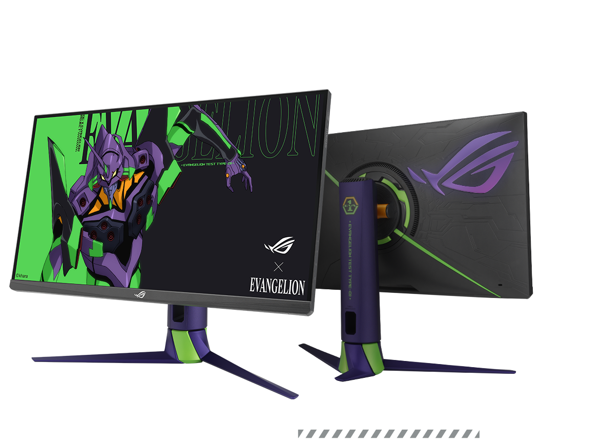
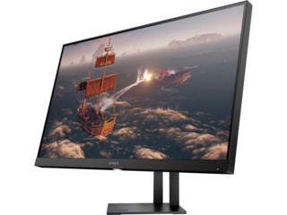
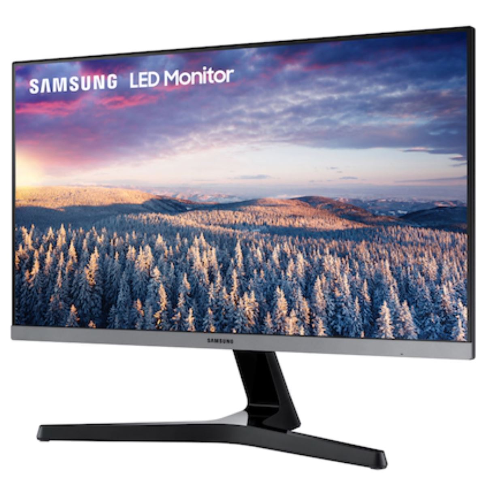

|  | Computer Monitors, is an output device that displays information in pictorial or text form. A monitor usually comprises a visual display, some circuitry, a casing, and a power supply. The display device in modern monitors is typically a thin-film-transistor liquid-crystal display (TFT-LCD) with LED backlighting having replaced cold-cathode fluorescent lamp (CCFL) backlighting. Previous monitors used a cathode-ray tube (CRT) and some plasma (also called gas-plasma) displays. Monitors are connected to the computer via VGA, Digital Visual Interface (DVI), HDMI, DisplayPort, USB-C, low-voltage differential signaling (LVDS) or other proprietary connectors and signals. |
|
|
Originally, computer monitors were used for data processing while television sets were used for entertainment. From the 1980s onwards, computers (and their monitors) have been used for both data processing and entertainment, while televisions have implemented some computer functionality. The common aspect ratio of televisions, and computer monitors, has changed from 4:3 to 16:10, to 16:9. |
||
|  |
LCD MonitorsA liquid crystal display (LCD) monitor is a computer monitor or display that uses LCD technology to show clear images, and is found mostly in laptop computers and flat panel monitors. This technology has replaced the traditional cathode ray tube (CRT) monitors, which were the previous standard and once were considered to have better picture quality than early LCD variants. |
|
|  |
LED MonitorsShort for light-emitting diode monitor, an LED monitor or LED display is a flat screen, flat-panel computer monitor or television. It has a very short depth and is light in terms of weight. The actual difference between this and a typical LCD monitor is the backlighting. The first LCD monitors used CCFL instead of LEDs to illuminate the screen. |
|